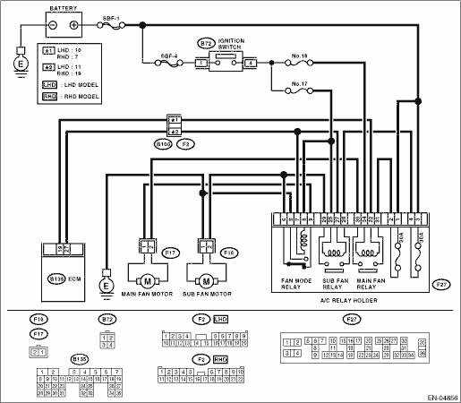

DTC DETECTING CONDITION:
Detected when two consecutive driving cycles with fault occur.
TROUBLE SYMPTOM:
• Radiator fan does not operate properly.
• Overheating
CAUTION:
After repairing or replacing the defective part, perform the Clear Memory Mode  and Inspection Mode .
and Inspection Mode .
WIRING DIAGRAM:


| STEP | CHECK | YES | NO |
|
1) Turn the ignition switch to OFF. 2) Connect the test mode connector at the lower portion of instrument panel (on the driver’s side). 3) Turn the ignition switch to ON. 4) Measure the voltage between ECM terminal and chassis ground while operating the radiator fan relay. NOTE: The radiator fan relay can be operated using the Subaru Select Monitor. Regarding the procedures, refer to “Compulsory Valve Operation Check Mode”. Connector & terminal (B135) No. 19 (+) — Chassis ground (−): |
Is the voltage 0 — 10 V? |
Repair the poor contact of ECM connector. |
|
|
Is the resistance less than 10 Ω? |
Repair the ground short circuit of the radiator main fan relay control. |
|
|
|
Is the voltage 10 V or more? |
|
Repair the open circuit of harness between ignition switch and fuse & relay box (F/B) connector. |
|
|
Is the resistance between 87 — 107 Ω? |
|
Replace the main fan relay. |
|
|
Is the resistance less than 1 Ω? |
|
Repair the harness and connector. NOTE: In this case, repair the following item: • Open circuit of harness between ECM and main fan relay connector • Poor contact of coupling connector |
|
|
Is there poor contact in ECM or main fan relay connector? |
Repair poor contact in ECM or main fan relay connector. |
Contact your SUBARU distributor service. |